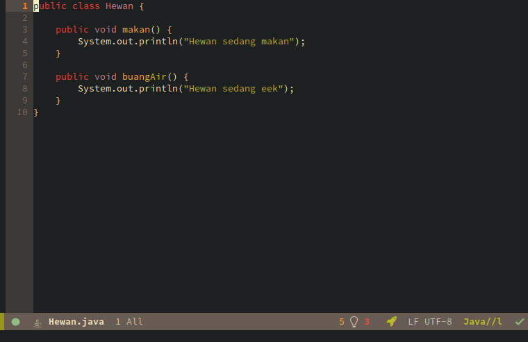
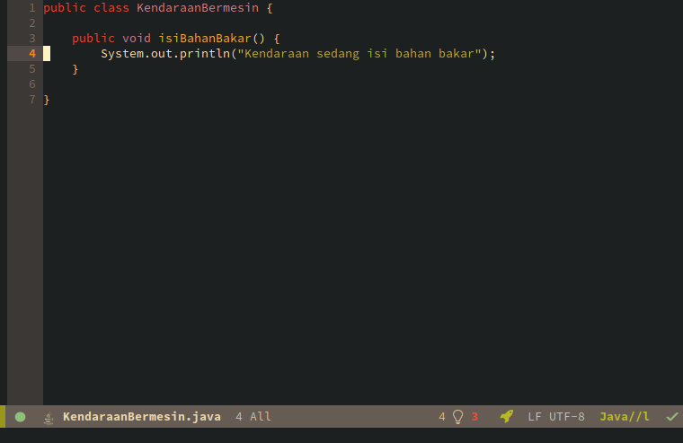
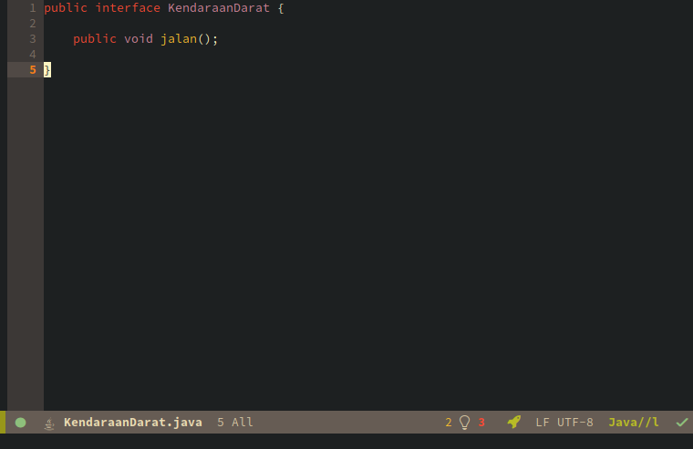
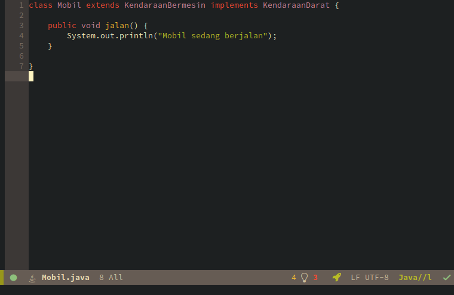
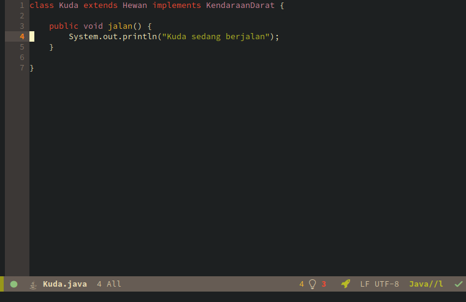
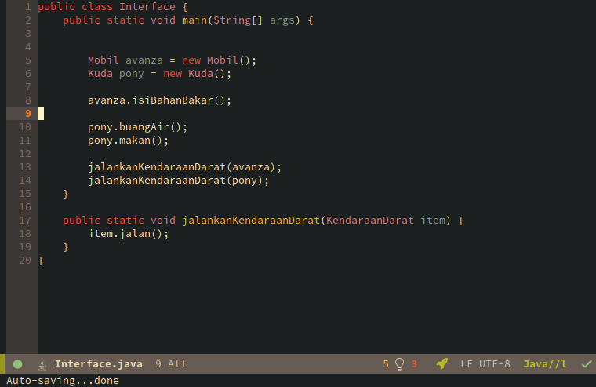
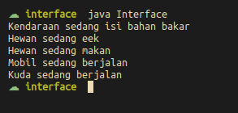

Oleh: Avrilian Briliansyah
Interface itu layaknya abstract class, tidak bisa diinisialisasi dan mengharuskan class yang mengimplementasikannya mengoverride method yang ada padanya.
Tapi interface itu lebih dari itu, interface bukanlah class jadi kita tidak bisa menginisialisasikannya. Dan lebih dari itu sebuah class dapat mengimplementasikan lebih dari 2 interface sedangkan sebuah class tidak bisa mewarisi dari 2 class sekaligus. Ini menjadikan interface lebih fleksibel dalam polimorfisme.
Interface yang sedang kita bicarakan tidak ada hubungannya dengan pengertian interface (antarmuka) yang mungkin kita tahu. Jadi anda tidak perlu bingung-bingung membuat hubungan dengan hal tersebut.
Misalkan kita memiliki diagram class seperti ini:

Disini dapat diamati bahwa Kuda dan Mobil (di dunia nyata) merupakan jenis kendaraan darat. Kemudian kita ingin membuat fungsi yang menerima argumen semua tipe kendaraan darat dan menjalankan fungsi jalan() dari argumen tersebut.
public void static jalankanKendaraanDarat(KendaraanDarat a) {
a.jalan();
}
Disini kita menemui masalah; class Kuda dan class Mobil bukanlah satu class, apa yang harus kita lakukan?
Solusinya? Interface
Dengan Interface kita bisa membuatnya seperti ini:

Pertama kita membuat interface KendaraanDarat
interface KendaraanDarat {
void jalan();
}
Kemudian kita bisa mengimplementasikan interface tadi ke class Kuda dan Mobil
class Kuda extends Hewan implements KendaraanDarat {
void jalan() {
//
}
}
class Mobil extends KendaraanBermesin implements KendaraanDarat {
void jalan() {
//
}
}
Ingat bahwa method yang dideklarasikan di interface merupakan abstract method dan kita harus membuat method tersebut di class contrete yang ada.
Sekarang method jalankanKendaraanDarat sudah menjadi method yang polimorfis. Yeeeyyy

Untuk praktik kali ini akan memakai diagram diatas sebagai acuan.
     
Output:
